Chapter 3 Analizando el ssdeep
Las funciones hash como MD5, SHA256 o otras son útiles si queremos verificar la integridad de un archivo, su principio fundamental es que un pequeño cambio en el archivo (del orden de unos pocos bits) cambia la salida drásticamente.
En nuestro caso si queremos encontrar similitud entre malware no podemos usar esas funciones, porque si sabemos que un archivo es peligroso y tenemos su hash calculado, con cambiar un bit de ese archivo ya no lo podríamos detectar.
Por eso existe el programa ssdeep, que permite observar pequeñas diferencias entre archivos calculando el CTPH (parecido al hash).
Tenemos tres programas de ejemplo escritos en C, y queremos ver en qué porcentaje se parecen.
3.2 sample2.c
#include <stdio.h>
int main(int argc, char *argv[]) {
for (int i = 0; i < 100; i++) {
if (i%2 == 0) {
i = i + 1;
}
}
return 0;
}3.3 sample3.c
#include <stdio.h>
void main() {
int a = 5;
printf (“Hello World: %d\n”, a);
}Calculamos y comparamos el ssdeep de los tres programas:
$ ssdeep -s * > sample_ctph.ssd
$ ssdeep -m sample_ctph.ssd -s *Obtenemos lo siguiente:
$ sample1 matches sample_ctph.ssd:/home/samuel/Documentos/LCC/pruebas/sample1 (100)
$ sample1 matches sample_ctph.ssd:/home/samuel/Documentos/LCC/pruebas/sample2 (63)
$ sample1 matches sample_ctph.ssd:/home/samuel/Documentos/LCC/pruebas/sample3 (80)sample1.c es mucho más parecido a sample3.c (en un 80%, mientras que solo un 63% con sample2.c).
3.4 Analizando los json
De la misma manera, primero cargamos el directorio Android y el dataframe preprocesado, y luego calculamos el hash como con los ejemplos.
path <- "~/Documentos/LCC/ProyectoVT/Proyecto/Android2/"
nombres_ficheros <- list.files(path)
df <- read_csv("~/Documentos/LCC/ProyectoVT/Proyecto/virusTotalCap2.csv")Dentro del json, hay un par clave valor que almacena el CTPH calculado (ssdeep), así que para analizarlo, escribimos primero la siguiente función que crea un dataframe con todos los json:
# Entrada: json
# Salida: dataframe
get_ssdeep <- function(x) {
json <- read_json(x)
res <- json %>% gather_object() %>% filter(name == 'ssdeep') %>% as.data.frame()
return (res)
}
# Por cada archivo en la carpeta Android
# coge su ssdeep y los guarda en un dataframe
df_deep <- data.frame()
for (i in nombres_ficheros) {
df_deep <- rbind(df_deep, get_ssdeep(paste0(path,i)))
}
# Limpia el dataframe
df_deep <- df_deep %>% select(..JSON)
colnames(df_deep) <- ('ssdeep')Una vez tenemos los datos, comparamos dos a dos todos los ssdeep usando la función adist y almacenamos los índices y su distancia. Índices contiene la distancia del json i con el j para luego construir una matriz.
# Coge los virus cuya distancia (parecido)
# en sus ssdeep sea menor que 2
# y los guarda en *indices*
indices <- c()
for (i in 1:nrow(df_deep)) {
for (j in (i+1):nrow(df_deep)) {
if ( adist(df_deep[i,], df_deep[j,]) == 1) {
indices <- c(indices, i,j)
}
}
}3.4.1 Matriz de adyacencias
Creamos una matriz de adyacencias con todos los json, donde en este caso la posicion Mij = 1 si la distancia entre los hashes del archivo i y el j es igual a uno.
Cuanto menor es la distancia, menos diferencia hay entre los hashes y más código comparten.
n <- nrow(df)
Mat <- matrix(0, nrow = n, ncol = n)
colnames(Mat) <- c(1:n)
row.names(Mat) <- c(1:n)
j <- 1
while(j < length(indices)) {
Mat[indices[j], indices[j+1]] <- 1
j <- j+2
}Teniendo la matriz de adyacencias el siguiente paso es construir el grafo. Cada vértice es un json, y los arcos conectan json cuya distancia recibe por parámetro get_adj_matrix. Una vez se crea el grafo añadimos un atributo a las aristas con su distancia.
# Entrada: distancia entre json
# Salida: Grafo=(V,E)
# V = json
# E = distancias (ssdeep)
get_adj_matrix <- function(distancia) {
indices <- c()
distancias <- c()
for (i in 1:nrow(df_deep)) {
for (j in (i+1):nrow(df_deep)) {
if ( adist(df_deep[i,], df_deep[j,]) <= distancia) {
indices <- c(indices, i,j)
distancias <- c(distancias, adist(df_deep[i,], df_deep[j,]))
}
}
}
n <- nrow(df)
Mat <- matrix(0, nrow = n, ncol = n)
colnames(Mat) <- c(1:n)
row.names(Mat) <- c(1:n)
j <- 1
while(j < length(indices)) {
Mat[indices[j], indices[j+1]] <- 1
j <- j+2
}
G <- graph_from_adjacency_matrix(Mat, mode = 'undirected')
G <- set_edge_attr(G, 'dist', value=distancias)
return(G)
}3.5 Grafos
Dibujamos el siguiente grafo con aquellos json cuyas distancias son menores o iguales que uno. Esto quiere decir que, por ejemplo, el grupo 147, 153 y 46 comparte gran parte de código.
G <- get_adj_matrix(1)
Isolated = which(degree(G)==0)
G2 = delete.vertices(G, Isolated)
plot(G2, vertex.color='#ADD8E6',
edge.curved = .1,
vertex.size=20,
edge.label=E(G2)$dist,
vertex.frame.color = NA,
layout=layout_nicely
)
title("Distancias <= 1",cex.main=1,col.main="Black")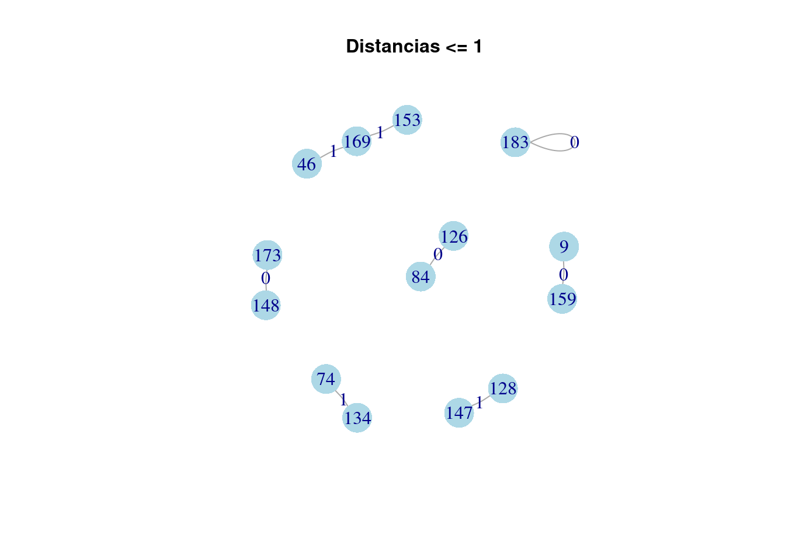
Construimos un dataframe con los nodos para analizarlos
vertices <- V(G2)$name
df_1 <- subset(df, row.names(df) %in% vertices)Información sobre los nodos
df_1 %>% select(submission.submitter_country) %>% unique()## # A tibble: 1 × 1
## submission.submitter_country
## <chr>
## 1 CAdf_1 %>% select(scan_date) ## # A tibble: 14 × 1
## scan_date
## <dttm>
## 1 2021-11-03 00:19:30
## 2 2021-11-03 00:19:22
## 3 2021-11-03 00:27:26
## 4 2021-11-03 00:25:46
## 5 2021-11-03 00:19:33
## 6 2021-11-03 00:27:35
## 7 2021-11-03 00:31:34
## 8 2021-11-03 00:25:15
## 9 2021-11-03 00:19:41
## 10 2021-11-03 00:21:08
## 11 2021-11-03 00:26:11
## 12 2021-11-03 00:20:03
## 13 2021-11-03 00:36:04
## 14 2021-11-03 08:46:17df_1 %>% select(positives) ## # A tibble: 14 × 1
## positives
## <dbl>
## 1 21
## 2 19
## 3 17
## 4 21
## 5 17
## 6 21
## 7 21
## 8 21
## 9 19
## 10 20
## 11 22
## 12 20
## 13 20
## 14 19df_1 %>% select(size) %>% unique()## # A tibble: 2 × 1
## size
## <dbl>
## 1 2669106
## 2 2369760df_1 %>% select(times_submitted) %>% unique()## # A tibble: 1 × 1
## times_submitted
## <dbl>
## 1 1df_1 %>% select(first_seen)## # A tibble: 14 × 1
## first_seen
## <dttm>
## 1 2021-11-03 00:19:30
## 2 2021-11-03 00:19:22
## 3 2021-11-03 00:27:26
## 4 2021-11-03 00:25:46
## 5 2021-11-03 00:19:33
## 6 2021-11-03 00:27:35
## 7 2021-11-03 00:31:34
## 8 2021-11-03 00:25:15
## 9 2021-11-03 00:19:41
## 10 2021-11-03 00:21:08
## 11 2021-11-03 00:26:11
## 12 2021-11-03 00:20:03
## 13 2021-11-03 00:36:04
## 14 2021-11-03 08:46:173.6 Grafo completo, G1
Vamos a ver qué grafo se dibuja si restringimos menos la búsqueda y ponemos que saque todos los archivos que se parezcan como mínimo en un 60%.
G1 <- get_adj_matrix(60)
plot(G1)
title("Grafo completo con distancia <= 60",cex.main=1,col.main="Black")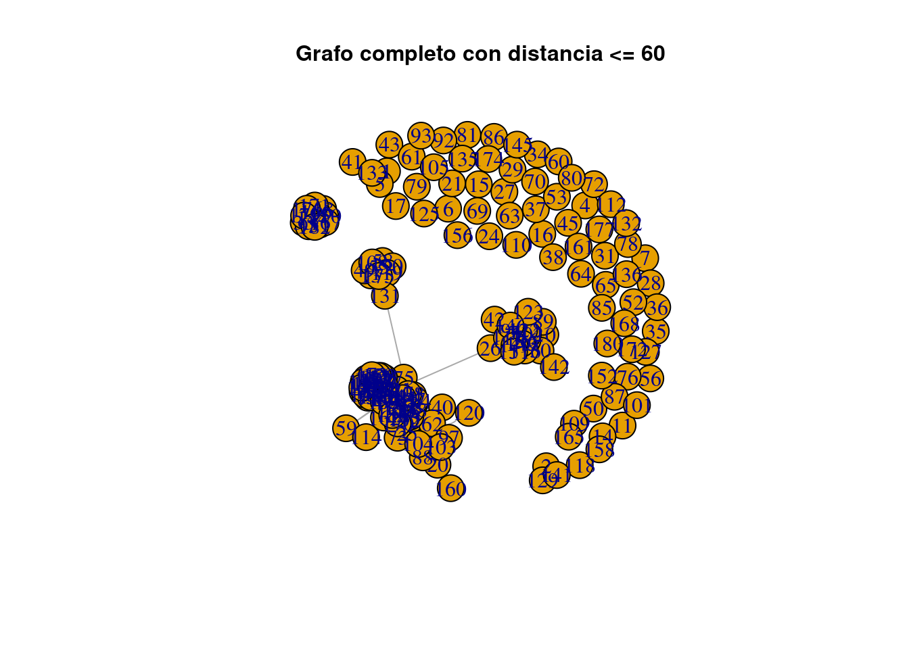
Se pueden ver varios grupos que forman componentes y muchos otros nodos aislados. Esto puede deberse a que los componentes corresponden a alguna variante del mismo malware.
Calculamos los componentes y guardamos los nodos de aquel más grande.
c1 <- components(G1)
biggest1 <- which.max(c1$csize)
vids1 <- V(G1)[c1$membership==biggest1]Dibujamos el subgrafo.
plot(induced_subgraph(G1, vids1), edge.label=E(G1)$dist)
title("Mayor componente con pesos",cex.main=1,col.main="Black")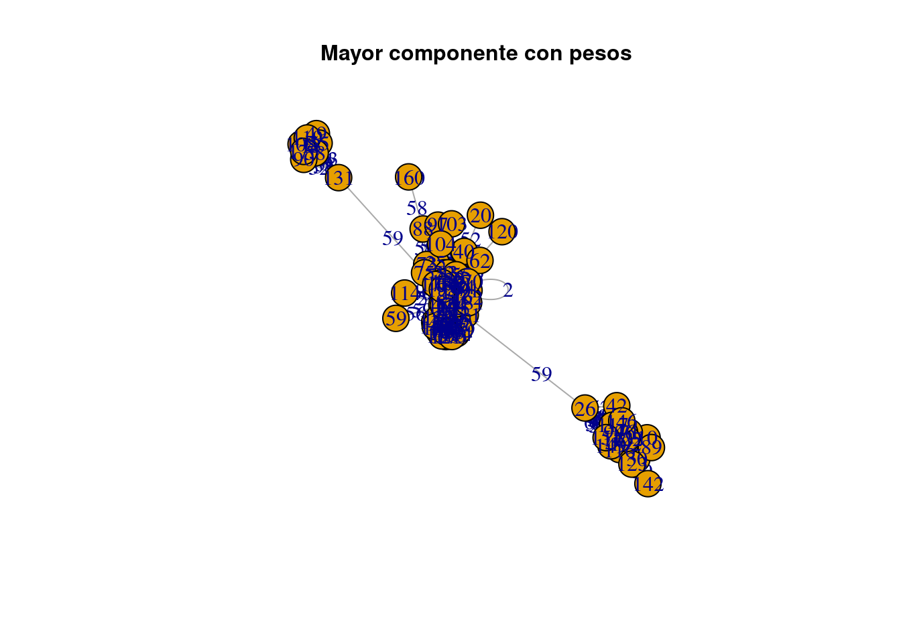
plot(induced_subgraph(G1, vids1), vertex.size=25)
title("Mayor componente sin pesos",cex.main=1,col.main="Black")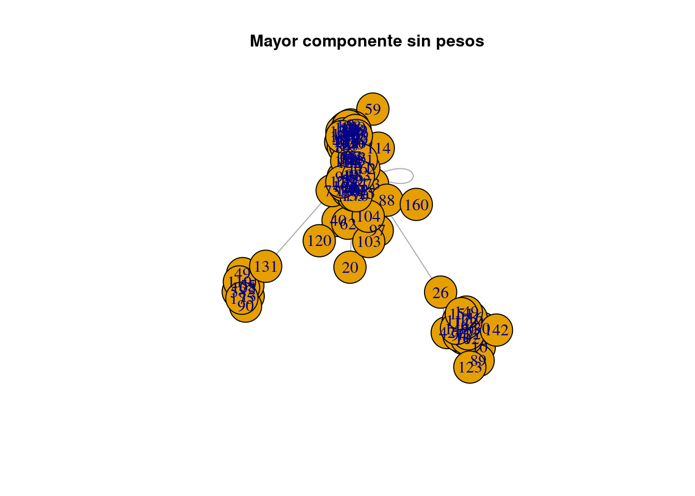
plot(induced_subgraph(G1, vids1),vertex.size = 5, vertex.color = "#1e3f66", vertex.frame.color = 'red', vertex.label.cex = .7, vertex.label = NA, edge.curved = .5, edge.arrow.size = .3, edge.width = .7)
title("Mayor componente",cex.main=1,col.main="Black")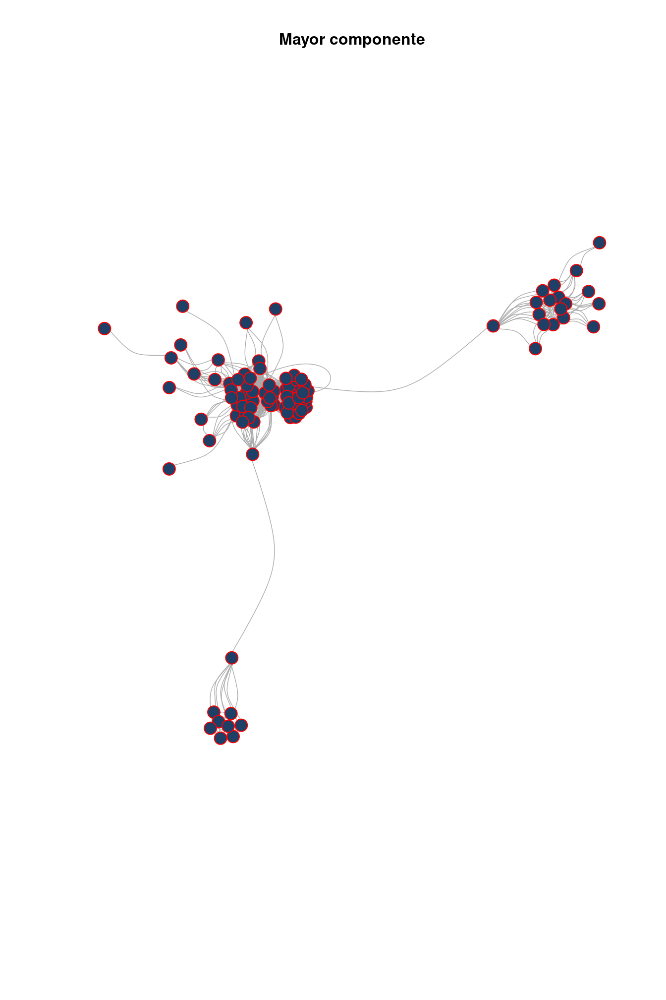
3.6.1 Análisis del componente
Usando el algoritmo pagerank y la función grado, ordenamos los nodos por importancia:
subgrafo <- induced_subgraph(G1, vids1)
pg <- page.rank(subgrafo)
importancia <- data.frame(
grado = degree(subgrafo),
page_rank = pg$vector
)
importancia_sorted <- data.frame(
grado = sort(degree(subgrafo), decreasing = TRUE),
page_rank = sort(pg$vector, decreasing = TRUE)
)
knitr::kable(head(importancia_sorted, 10))| grado | page_rank | |
|---|---|---|
| 82 | 62 | 0.0197978 |
| 163 | 61 | 0.0196663 |
| 47 | 60 | 0.0190018 |
| 124 | 59 | 0.0181018 |
| 111 | 58 | 0.0180970 |
| 154 | 58 | 0.0176471 |
| 54 | 57 | 0.0174520 |
| 39 | 56 | 0.0170076 |
| 67 | 56 | 0.0170076 |
| 115 | 55 | 0.0166772 |
Resaltamos los nodos con grado mayor que cincuenta:
plot(subgrafo, vertex.size=ifelse(importancia[V(subgrafo),][1]>50,5, 1), vertex.label=NA, edge.curved = .5, edge.arrow.size = .3, edge.width = .7)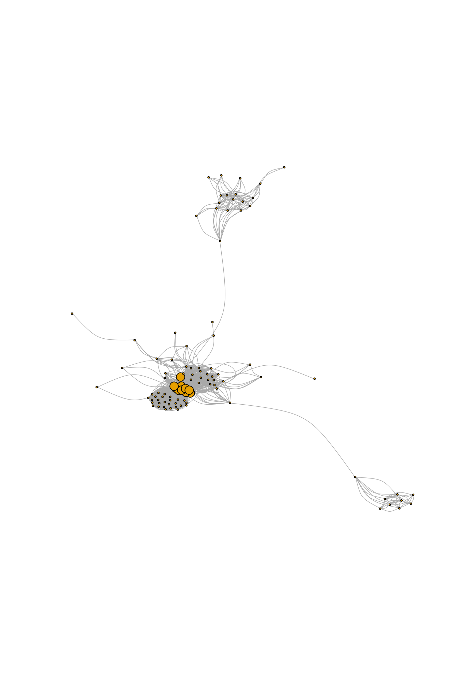
Si vemos los tamaños de los componentes, hay uno con doce nodos:
c1$csize## [1] 3 3 99 1 1 1 1 2 1 1 1 12 1 1 1 1 1 1 1 1 1 1 1 1 1 1 1 1
## [29] 1 1 1 1 1 1 1 1 1 1 1 1 1 1 1 1 1 1 1 1 1 1 2 1 1 1 1 2
## [57] 1 1 1 1 1 1 1 1 1 1 1Lo dibujamos, en este caso los json comparten aproximadamente la mitad de código.
vids2 <- V(G1)[c1$membership==12]
plot(induced_subgraph(G1, vids2), edge.label=E(G1)$dist, vertex.size=20)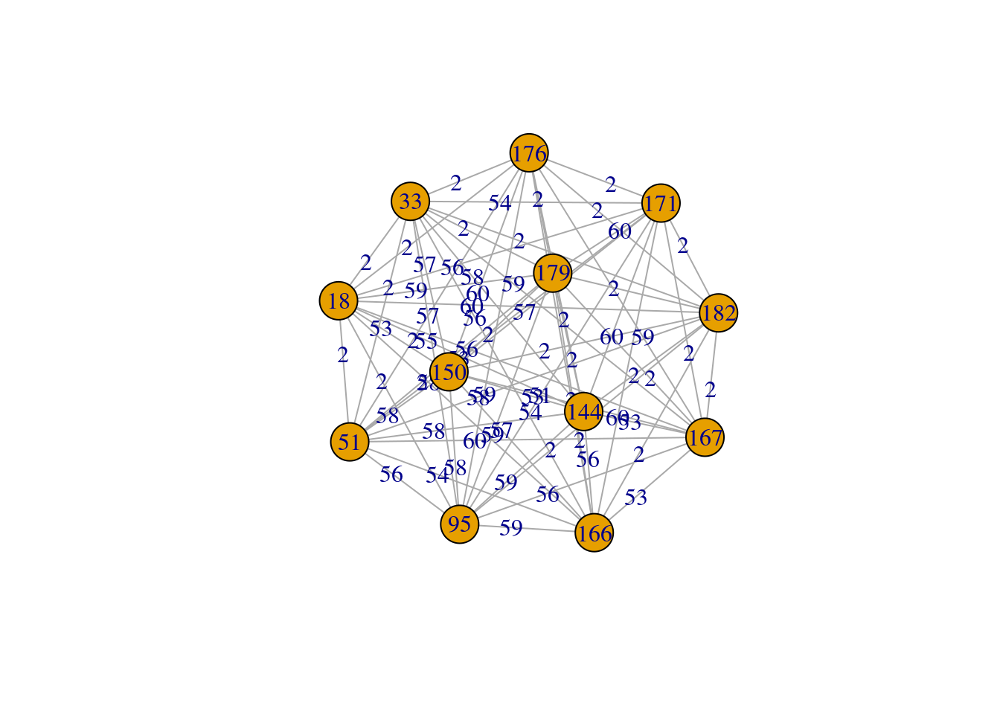
3.6.2 Algunos gráficos de G1
A continuación se muestran gráficas del componente grande de G1. Transformamos las fechas a formato date para poder dibujarlas.
# Comparacion del componente grande de G1
v <- as(vids1, 'vector')
df_grafo <- subset(df, row.names(df) %in% v)
library(plotly)
df_grafo$scan_date <- as.POSIXct(df_grafo$scan_date, format="%Y-%m-%d %H:%M:%S")
df_grafo$first_seen <- as.POSIXct(df_grafo$first_seen, format="%Y-%m-%d %H:%M:%S")
# Cambiamos el nombre de la columna
colnames(df_grafo)[which(colnames(df_grafo)=='submission.submitter_country')] <- 'Pais'Se subieron en un intervalo de nueve horas
max(df_grafo$scan_date)-min(df_grafo$scan_date)## Time difference of 9.341389 hoursPositivos a lo largo del tiempo (fecha de escáner).
p <- ggplot(df_grafo, aes(x=scan_date, y=positives)) +
geom_line() + ylab('Positivos') + xlab('Fecha de escáner') + theme_bw()
ggplotly(p)Tamaño de los json a lo largo del tiempo (fecha de escáner).
p2 <- ggplot(df_grafo, aes(x=scan_date, y=size)) +
geom_line() + ylab('Tamaño') + xlab('Primera vez subido') + theme_bw()
ggplotly(p2)Positivos a lo largo del tiempo (primera vez que se subió).
p3 <- ggplot(df_grafo, aes(x=first_seen, y=positives)) +
geom_line() + ylab('Positivos') + xlab('Tiempo') + theme_bw()
ggplotly(p3)Regiones desde donde se subió:
df_grafo %>% select(times_submitted, Pais) %>% group_by(Pais) %>% summarise(times_submitted=sum(times_submitted)) %>%
ggplot(data=., aes(y=times_submitted)) +
geom_bar(mapping = aes(fill=Pais, x=Pais), stat = 'identity') +
theme_bw() 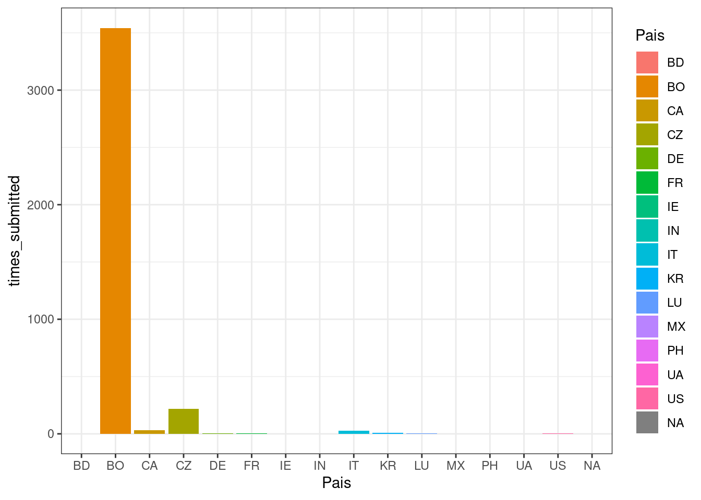
Como los datos no están a escala, sumamos uno y aplicamos logaritmo para compararlos mejor:
p_regiones <- df_grafo %>%
select(times_submitted, Pais) %>%
group_by(Pais) %>%
summarise(times_submitted=sum(times_submitted)) %>%
ggplot(data=., aes(y=log(1+times_submitted))) +
geom_bar(mapping = aes(fill=Pais, x=Pais), stat = 'identity') +
ylab('Veces subido') +
xlab('País') +
theme_bw()
ggplotly(p_regiones)Visualizamos el número de positivos por país:
p_positivos_pais <- df_grafo %>%
select(positives, Pais) %>%
group_by(Pais) %>% summarise(positives=sum(positives)) %>%
ggplot(data=., aes(y=positives)) +
geom_bar(mapping = aes(fill=Pais, x=Pais), stat = 'identity') +
ylab('Positivos') +
xlab('País') +
theme_bw()
ggplotly(p_positivos_pais)3.7 Grafo de distancias <= 10 para G
Calculamos y dibujamos las componentes del grafo con distancias menores o iguales que diez.
G <- get_adj_matrix(10)
c <- components(G)
biggest <- which.max(c$csize)
vids <- V(G)[c$membership==biggest]
plot(induced_subgraph(G, vids), edge.label=E(G)$dist)
title("Distancias <= 10 con pesos",cex.main=1,col.main="Black")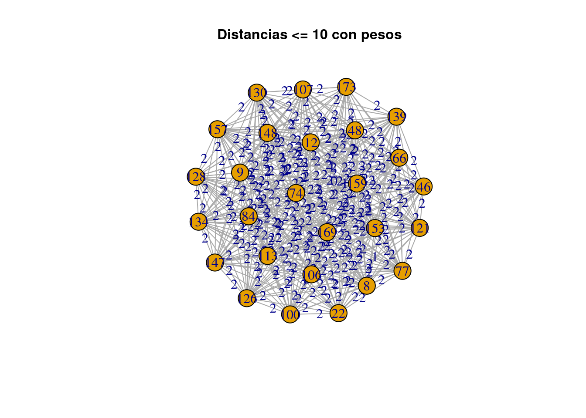
plot(induced_subgraph(G, vids), vertex.size=25)
title("Distancias <= 10 sin pesos",cex.main=1,col.main="Black")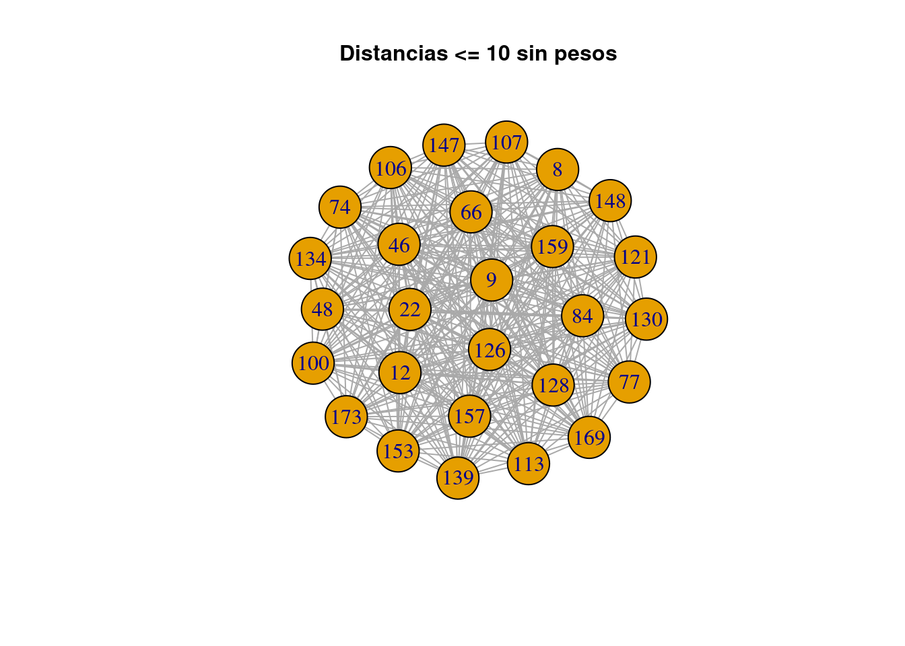
plot(induced_subgraph(G, vids),vertex.size = 10, vertex.color = "#1e3f66", vertex.frame.color = 'blue', vertex.label.cex = .7, vertex.label = NA, edge.curved = .5, edge.arrow.size = .3, edge.width = .7)
title("Distancias <= 10",cex.main=1,col.main="Black")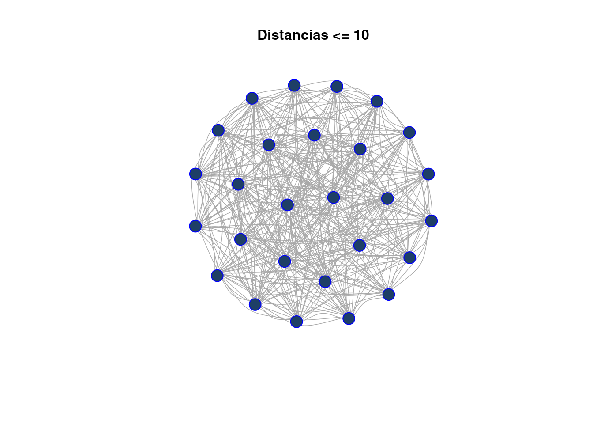
3.8 Análisis del mayor componente de G
Todos los archivos tienen el mismo tamaño, subidos desde California en menos de una hora. Con una media de 20 positivos, probablemente sean el mismo archivo.
v <- as(vids, 'vector')
compare <- data.frame()
for (i in v) {
compare <- rbind(compare, df[i,])
}
compare %>% select(size) %>% unique()## # A tibble: 1 × 1
## size
## <dbl>
## 1 2669106compare %>% select(submission.submitter_country) %>% unique()## # A tibble: 1 × 1
## submission.submitter_country
## <chr>
## 1 CAtimes <- compare %>% select(first_seen, scan_date) %>%
mutate(first_seen = gsub('20[0-9]{2}-[0-9]+-[0-9]+', '', first_seen), scan_date = gsub('20[0-9]{2}-[0-9]+-[0-9]+', '', scan_date))Primera y última vez que se subió:
lapply(times[,1], max)## $first_seen
## [1] " 00:46:00"lapply(times[,1], min)## $first_seen
## [1] " 00:19:22"Media:
# Media
compare %>% select(positives) %>% lapply(., mean)## $positives
## [1] 19.85185Desviación típica:
# Desviación típica
compare %>% select(positives) %>% lapply(., sd)## $positives
## [1] 1.6101533.9 Analizando los resultados de los antivirus de G
Vamos a ver qué resultado da cada antivirus a los json (vértices) del grafo G. Si dos antivirus dan el mismo resultado en archivos diferentes que sabemos que son casi iguales es probable que compartan motor.
La siguiente función recorre el directorio del dataset y crea un dataframe con los antivirus.
# Entrada: Ruta al fichero
# Salida: Dataframe con resultados de los AV
get_results <- function(json) {
json_data <- tidyjson::read_json(json)
df_temp <- json_data %>%
gather_object() %>%
filter(name=='scans') %>%
spread_all() %>%
gather_object() %>%
select(ends_with('result')) %>%
.[1,] %>%
select(-last_col())
return(df_temp)
}vids tiene los vértices de los grafos calculados. Pasamos los nombres a formato numérico con ceros a la izquierda.
ficheros <- sapply(vids, function(x) paste0(sprintf("%04d", x), '.json') )Creamos un dataframe y, por cada vértice, cogemos los escáneres.
df_results <- data.frame()
for (i in ficheros) {
df_results <- rbind.fill(df_results, get_results(paste0(path,i)))
}
write.csv(df_results, "~/Documentos/LCC/ProyectoVT/Proyecto/escaneres.csv")Leemos y limpiamos el dataframe.
df_results <- read_csv("~/Documentos/LCC/ProyectoVT/Proyecto/escaneres.csv")
#df_results <- df_results %>% select(-..JSON)
colnames(df_results) <- lapply(colnames(df_results), function(x) gsub('.result', '', x))
# Quitar columnas enteras NA
df_results <- df_results[, colSums(is.na(df_results)) != nrow(df_results)]
df_results <- df_results %>% select(-...1)Cogemos la columna trece, que no tiene valores NA. Como en realidad todas las columnas son el mismo archivo con ver una sola nos sirve, y podemos ver cómo cada antivirus (excepto los que comparten motor) lo clasifican de manera distinta.
j107 <- df_results[13,]
j107 <- t(j107)
knitr::kable(j107, col.names = c('0107.json'))| 0107.json | |
|---|---|
| Lionic | Trojan.AndroidOS.Wapnor.C!c |
| ClamAV | NA |
| CAT-QuickHeal | NA |
| McAfee | Artemis!46B876999B18 |
| VIPRE | NA |
| Sangfor | Malware.Generic-Script.Save.5b333b13 |
| Alibaba | NA |
| K7GW | Trojan ( 0051a3c71 ) |
| Trustlook | NA |
| Arcabit | NA |
| Cyren | AndroidOS/GhostPush.C.gen!Eldorado |
| SymantecMobileInsight | NA |
| Symantec | Trojan.Gen.MBT |
| ESET-NOD32 | a variant of Android/TrojanDropper.Shedun.V |
| TrendMicro-HouseCall | NA |
| Avast | Android:Revo-OU [Trj] |
| Cynet | Malicious (score: 99) |
| Kaspersky | HEUR:Trojan-Dropper.AndroidOS.Wapnor.a |
| BitDefender | NA |
| NANO-Antivirus | Trojan.Android.MLW.ebzlbe |
| MicroWorld-eScan | NA |
| Rising | NA |
| Ad-Aware | NA |
| Emsisoft | NA |
| Comodo | NA |
| F-Secure | Malware.ANDROID/Agent.hutg |
| DrWeb | Android.DownLoader.329.origin |
| Zillya | Dropper.Shedun.Android.200569 |
| TrendMicro | NA |
| McAfee-GW-Edition | Artemis!Trojan |
| FireEye | NA |
| Sophos | NA |
| Ikarus | Trojan-Dropper.AndroidOS.Shedun |
| Avast-Mobile | Android:Shedun-V [Trj] |
| Jiangmin | NA |
| Avira | ANDROID/Agent.hutg |
| Antiy-AVL | Trojan/Generic.ASBOL.A0C1 |
| Kingsoft | NA |
| Microsoft | TrojanDropper:AndroidOS/Shedun.A!MTB |
| ZoneAlarm | NA |
| GData | NA |
| BitDefenderFalx | NA |
| AhnLab-V3 | PUP/Android.Agent.839002 |
| Tencent | Dos.Trojan-dropper.Piom.Pege |
| Yandex | NA |
| MAX | malware (ai score=95) |
| MaxSecure | Android.wapnor.a |
| Fortinet | Android/Shedun.AC!tr |
| AVG | Android:Revo-OU [Trj] |
Si seleccionamos los AV Kasperky y ZoneAlarm se observa fácilmente que los resultados son idénticos y seguramente compartan el mismo motor.
df_results %>% select(Kaspersky, ZoneAlarm) %>% head(., 10) %>% knitr::kable(.)| Kaspersky | ZoneAlarm |
|---|---|
| HEUR:Trojan-Dropper.AndroidOS.Hqwar.bk | HEUR:Trojan-Dropper.AndroidOS.Hqwar.bk |
| not-a-virus:HEUR:AdWare.AndroidOS.Ewind.kp | NA |
| not-a-virus:UDS:AdWare.AndroidOS.Ewind.kp | not-a-virus:HEUR:AdWare.AndroidOS.Ewind.kp |
| HEUR:Trojan-Dropper.AndroidOS.Wapnor.a | NA |
| not-a-virus:HEUR:AdWare.AndroidOS.Ewind.kp | NA |
| HEUR:Trojan-Banker.AndroidOS.Fakecalls.k | HEUR:Trojan-Banker.AndroidOS.Fakecalls.k |
| not-a-virus:HEUR:AdWare.AndroidOS.Adlo.b | NA |
| NA | NA |
| not-a-virus:HEUR:AdWare.AndroidOS.Ewind.kp | not-a-virus:HEUR:AdWare.AndroidOS.Ewind.kp |
| HEUR:Trojan.AndroidOS.Agent.aw | HEUR:Trojan.AndroidOS.Agent.aw |
McAfee y McAfee GW Edition también, normal porque ambos son de McAfee
df_results %>% select(McAfee, `McAfee-GW-Edition`) %>% head(., 10) %>% knitr::kable(.)| McAfee | McAfee-GW-Edition |
|---|---|
| Artemis!BF3E6F490724 | NA |
| Artemis!919A1900C529 | Artemis |
| Artemis!919A1900C529 | Artemis |
| Artemis!1E07E4821182 | Artemis!Trojan |
| Artemis!919A1900C529 | Artemis |
| NA | NA |
| Artemis!0C5C3D793761 | Artemis!PUP |
| Artemis!4EF2BDF37187 | Artemis |
| Artemis!919A1900C529 | Artemis |
| Artemis!19295D19D0AC | Artemis!Trojan |